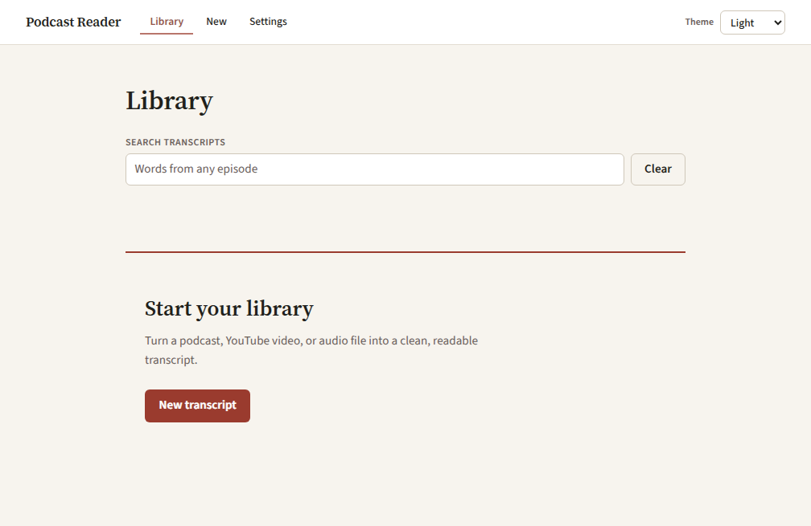
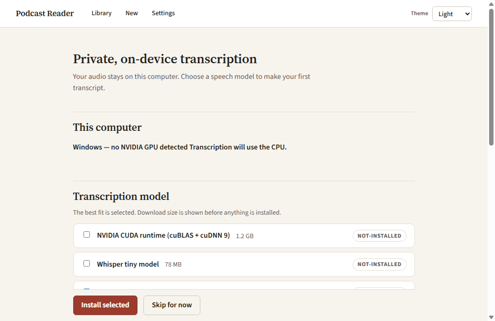
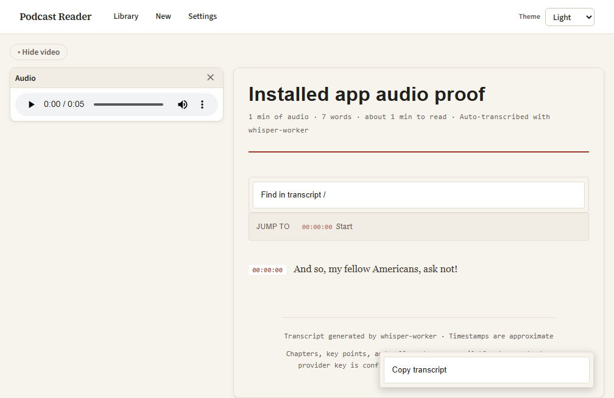
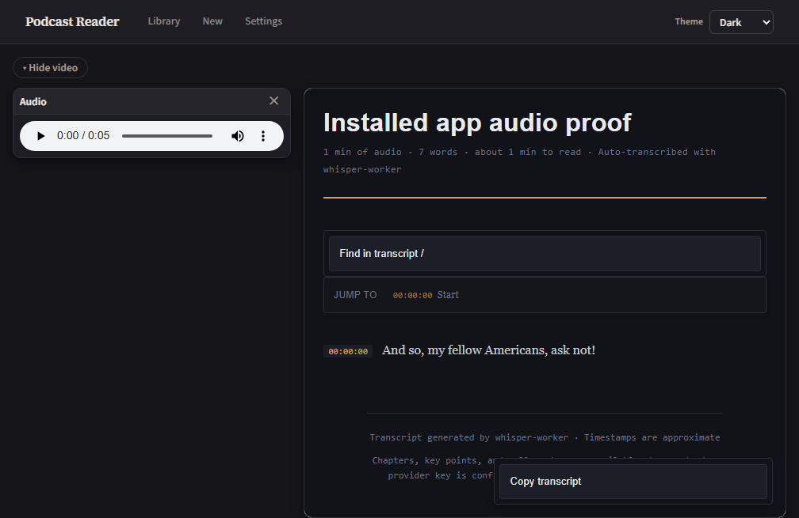
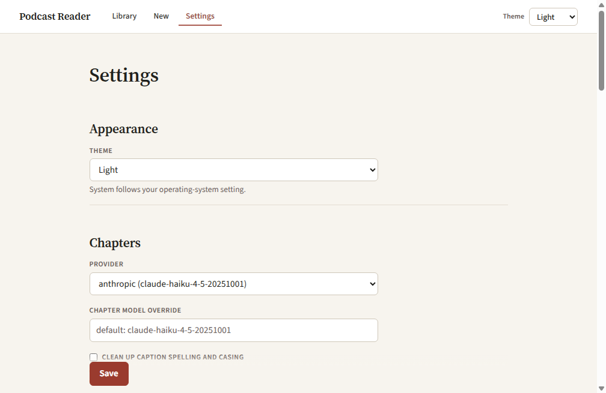

Turn a podcast, video, or audio file into a clean, searchable transcript.
Podcast Reader transcribes on your computer, keeps a local library, and
gives long-form audio a page made for reading.
Windows installer in final prep. Signed public downloads
are not available yet. Developers can build the app from source today.

The real installed Windows app, shown in its default Light theme.
The privacy boundary
Your audio stays with you.
Speech-to-text runs on your computer. There is no Podcast Reader
account, and the project is open source.
Network boundaries are explicit: URL inputs are fetched from their
source, transcription models download during setup, and transcript
text is sent to a chapter provider only if you configure one. Local-file
transcription itself does not upload your audio to a transcription service.
How it works
From audio to a page you can use
1
Add a source
Paste a supported URL, choose a local audio file, or drop a file into the app.
2
Transcribe on this computer
Choose a speech model that fits your hardware. CPU works; an NVIDIA GPU is optional for faster transcription.
3
Read, find, and copy
Open the finished transcript beside its audio, jump by timestamp, search for exact words, and copy what you need.

First run detects the computer and shows every download size before installation.
Made for reading
A transcript designed for reading
Podcast Reader turns timestamped speech into calm, readable pages.
When you configure an optional chapter provider, it can add chapter
summaries, key points, and pull quotes. Without one, the full transcript
and timestamp navigation still work.

Audio, timestamp navigation, search, and copy controls stay close to the text.
Search
Find the words, not just the passage
Search highlights the matched term inside the transcript and keeps
passage context around it. Unicode-aware matching works across scripts
and languages, and next/previous controls make long conversations quick to scan.
Export
Copy the part you need
Copy the whole transcript or the current chapter as plain text or
Markdown, with timestamps when useful. Export is generated in the page;
it does not call a network service.
Speakers
Keep speakers distinct
Install the optional speaker-diarization pack to label speaker changes.
The pack runs locally after installation and is never enabled by default.
Private web access
Read privately from another device
Enable Private web access to open the read-only library from a phone or
laptop already on your Tailscale network. Podcast Reader uses Tailscale
Serve—not Funnel—and keeps the engine bound to the desktop's loopback
interface. Tailscale is optional and is not bundled.

The transcript in Dark.

Light is the default; Light, Dark, and System remain explicit choices.
Requirements
What you need
Start on a CPU. Add a GPU only if you want more speed.
Platform
Windows is the supported installed-app target today. macOS packaging is planned, not released.
Hardware
CPU transcription works without a GPU. A supported NVIDIA GPU can accelerate larger models; the Windows CUDA runtime is a separate optional 1.2 GB download.
Speech model
Choose during setup. Current approximate downloads: tiny 78 MB, small 486 MB, medium 1.5 GB, or large-v3 3.1 GB. The app recommends small for CPU systems and large-v3 for NVIDIA GPU systems.
Speaker labels
The optional speaker-diarization worker is about 340 MB. Its public pack is not yet published, so the installed app currently marks it unavailable.
Model and component downloads happen at runtime and show their size before
installation. The Windows build bundles dynamically used, LGPL-configured
FFmpeg/FFprobe binaries; license notices and component provenance ship with the app.
Get started
Build it today. Download it when signing is ready.
The source is public and the Windows build path is documented now. A
signed public installer will appear here only after the release-signing
work is complete—no unsigned installer is presented as a release.